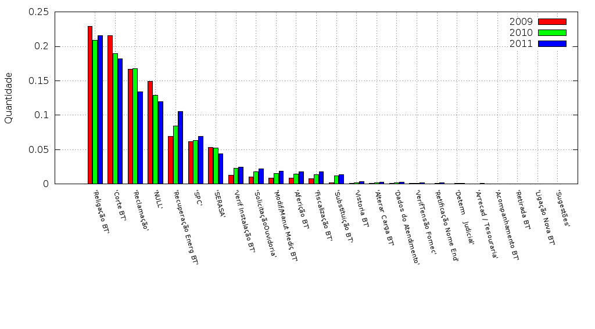
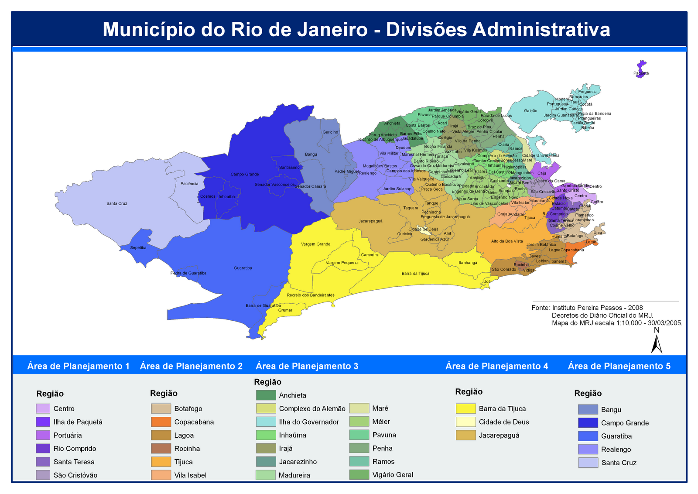
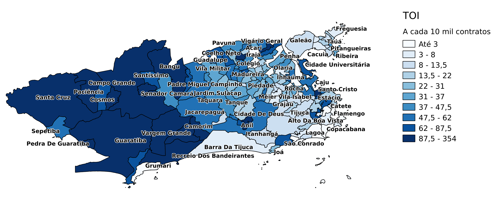
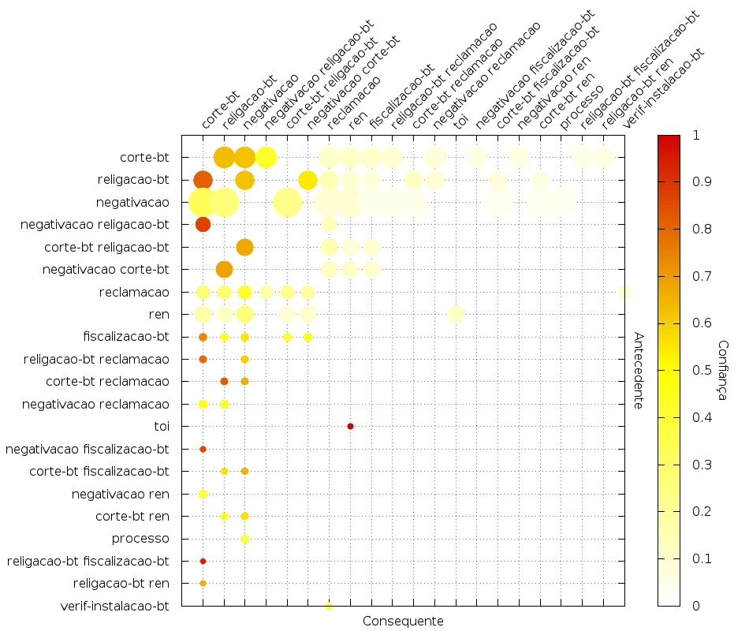

Light S/A
Prevenção, Tratamento e Redução
dos Conflitos de Consumo
Created by Leximath
Último evento antes do processo
Análise do comportamento dos consumidores em relação aos eventos ofensores e um processo
Porcentagem do último evento ofensor antes do processo
Dias entre eventos ofensores e processo

|
Corte como última nota: tempo até o processo
| Quantidade | % | |
| Dias |
Distribuição de dias entre eventos ofensores e processo
| % | |
| Dias |
Análise de ocorrências por região
Histogramas
Análise de ocorrências por região
Gráficos de dispersão
Municípios - Processo e TOI
Processo e TOI - Apenas APs
Municípios - Processo e Corte
Processo e Corte - Apenas APs
Municípios - Processo e Negativação
Processo e Negativação - Apenas APs
Municípios - Processo e Reclamação
Processo e Reclamação - Apenas APs
Regiões Administrativas
Regiões Administrativas - Processo e TOI
Regiões Administrativas - Processo e Corte
Regiões Administrativas - Processo e Negativação
Regiões Administrativas - Processo e Reclamação
Análise de ocorrências por região
Mapas de calor
Corte
Negativação
Reclamação
TOI
Corte - Detalhe em Sepetiba
Negativação - Detalhe em Sepetiba
Reclamação - Detalhe em Sepetiba
TOI - Detalhe em Sepetiba
Análise de ocorrências por região
Bairros e Municípios
Bairros - Ocorrências de corte
Bairros - Ocorrências de negativação
Bairros - Ocorrências de processo
Bairros - Ocorrências de reclamação
Bairros - Ocorrências de TOI
Municípios - Ocorrências de corte
Municípios - Ocorrências de negativação
Municípios - Ocorrências de processo
Municípios - Ocorrências de reclamação
Municípios - Ocorrências de TOI
Análise de interações de clientes
Permite avaliar a relação entre interações de um mesmo cliente.
Clientes Litigantes
Gráfico de Pares - Quantidade de Pares
Direção dos eventos
Gráfico de Pares - Quantidade de Contratos
Direção dos eventos
Gráfico de Pares - Quantidade de Pares
Direção dos eventos
Gráfico de Pares - Quantidade de Contratos
Direção dos eventos
Regras de associação - Matriz
Regras de associação - Tabela